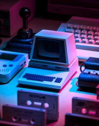

Hidrojen yakıtlı arabalar elektrikli araçları yakalayabilecek mi?
İsteğe bağlı AI görüntü oluşturmanın olası olumsuz etkileri nelerdir??
Risk sermayesi firmalarının özel finansmanı yıldan yıla %50 azaldı. Bunun ne anlama geldiğine bir göz atıyoruz.
Platformların gücünü tekrar insanların eline verme iddiasında olan webin bir sonraki evrimine dalıyoruz. Peki gerçekten vaadini yerine getiriyor mu?
DEVAMINI OKU
Eski bilgisayarlara modern yükseltmeler yapıldığında ne olur?
2022'nin En İyi 10 Dizüstü Bilgisayarı
Pandemi nasıl yeni fırsatlar yarattı?